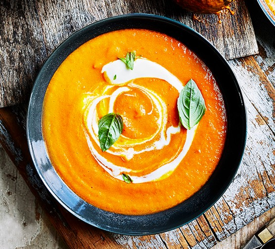

Soup

Description
Soup is the liquid version of a sandwich. It is normally made when there is no sandwiches left.
Ingredients
Method
- Heat up the water in a large pan.
- Keep heating up the water.
- Almost there.
- NOW! QUICK! Add your veggies to the water. It should be really hot by now.
- Leave this pot for a good three hours, or until your veggies become liquid.
- Eat with your spoon. This is important as forks do not work with this dish.